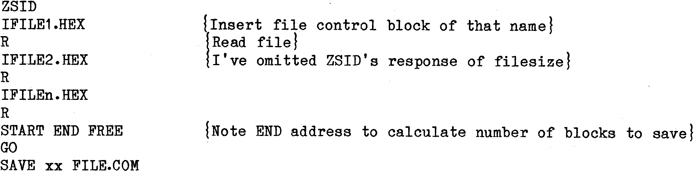

80-Bus News |
September–October 1983 · Volume 2 · Issue 5 |
| Page 60 of 67 |
|---|
If doing a large program, then it is worthwhile using SUBMIT files with parameters to lessen the amount of work. These can remarkably shorten the repetitive process of assembly and linking. Unfortunately DISZILOG will not work off a SUBMIT file (it doesn’t use much buffered console input). If it did, it would speed up the process even more. Has anyone tried a mod on it to do just that? If so I’d be very greatful for details. Minor problems arise. One needs to keep track of the sections of the file – so add an index number, as FILE1, FILE2 etc. Some problem may arise with ORG statements needing to be deleted from the ASM files or with the linker (if used) inserting unwanted jumps to where it thinks entry points ought to be.
When all is transmitted, and the receiving machine has a disk full of FILE1.HEX, .... FILEn-HEX, one can do two things. Either PIP FILE.HEX=FILE1.HEX,FILE2.HEX,…,FILEn.HEX to concatenate the files into one which you then LOAD. Maximum filesize again about 26k – machine and CP/M dependant! or else
This entire process is laborious, but it does work. To get the hang of this method, start off with a short ASCII program and get that to transmit. This proves that your initialisation, baud rates, connections etc. are all O.K. Then try a trivial COM file – I wrote one under ZSID. 100H bytes of A’s, 100H bytes of B’s, 100H of 1A’s, 100H of D’s, SAVEd 4 FILE.COM, and tried disassembling that in 100H blocks. You will become very familiar with your Disassembler, your assembler, your linker, and above all, with PIP. Do remember that a ^C may reset PUN: and RDR: to other values. Do check them after ^C’s until you are sure what happens. Remember PIP option [E] to echo all transfer operations to the screen. A little bit of experiment, copious notes of parameters and options, and you will soon be in meaningful communication with the rest of the world.
Back issues of INMC, INMC80 and 80-BUS News are available from Interface Data at the address shown on the inside front cover. The following issues are currently available:
| UK. | Add | 25p | for | one | issue, | 20p | for | each | additional | issue | . |
| Overseas. | " | 40p | " | " | " | 25p | " | " | " | " | . |
| Page 60 of 67 |
|---|